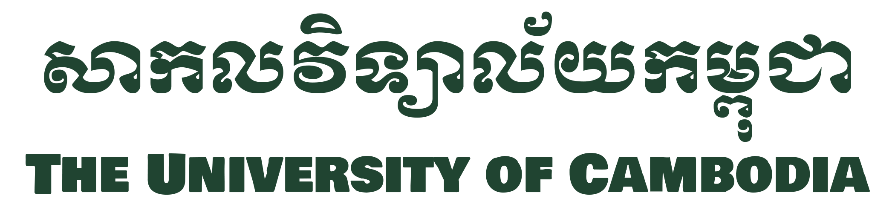
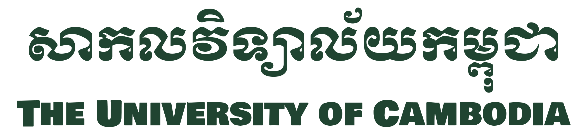

ចាប់តាំងពីការបង្កើតឡើងនៅក្នុងខែមិថុនាឆ្នាំ 2003 សាកលវិទ្យាល័យកម្ពុជា(UC) បានក្លាយជាគ្រឹះស្ថានឧត្តមសិក្សាឈានមុខគេនិងមានកេរ្តិ៍ឈ្មោះបំផុតក្នុងប្រទេសកម្ពុជា។ វាគឺជាសហគមន៍បញ្ញវន្តដែលសិស្សរៀនពីរបៀបស្វែងរកការចង់ដឹងចង់ឃើញរបស់ពួកគេ បង្កើតនិងចែករំលែកចំណេះដឹង កែលម្អ និងប្រកួតប្រជែងគំនិត លើកកម្ពស់ការយល់ដឹងកាន់តែច្រើន និងបម្រើគ្រួសារ និងសហគមន៍របស់ពួកគេ។ បរិយាកាសសិក្សាយ៉ាងម៉ត់ចត់ និងគាំទ្រនៅ UC ជំរុញការសន្ទនាបើកចំហ និងស្ថាបនា និងលើកកម្ពស់ជំនាញការគិត វិភាគ និងគំនិតច្នៃប្រឌិតដ៏រឹងមាំក្នុងចំណោមសិស្ស ខណៈពេលដែលពួកគេរៀបចំពួកគេដើម្បីដោះស្រាយបញ្ហាដែលកាន់តែស្មុគស្មាញនៅក្នុងសង្គម និងស្វែងរកអត្ថន័យនៅក្នុងជីវិតរបស់ពួកគេតាមរយៈការផ្តល់ជូនថ្នាក់បរិញ្ញាបត្រប្រកបដោយភាពច្នៃប្រឌិត។ បញ្ចប់ការសិក្សា និងវគ្គសិក្សាជំនាញវិជ្ជាជីវៈ។ សាកលវិទ្យាល័យទទួលស្គាល់តម្រូវការក្នុងការបណ្តុះបណ្តាល និងបណ្ដុះបណ្ដាលអ្នកគិតវ័យក្មេងដែលមានសមត្ថភាពខ្ពស់ជំនាន់ថ្មី ដែលរួមចំណែកដល់ការអភិវឌ្ឍន៍បញ្ញា សេដ្ឋកិច្ច និងសង្គមរបស់ប្រទេសកម្ពុជា និងជាអ្នកដឹកនាំប្រកបដោយគុណតម្លៃ សុចរិតភាព និងក្ដីមេត្តា។ តម្លៃដែលបានរៀបរាប់ខាងលើរបស់សាកលវិទ្យាល័យត្រូវបានឆ្លុះបញ្ចាំងនៅក្នុងបាវចនាពីររបស់ខ្លួនគឺ “ក្នុងការស្វែងរកចំណេះដឹង ប្រាជ្ញា” និង “ការកសាងអ្នកដឹកនាំនៅថ្ងៃស្អែក”
សាកលវិទ្យាល័យកម្ពុជា គឺជាសាកលវិទ្យាល័យឯកជនមួយ ដែលផ្តល់សញ្ញាបត្រជាច្រើន រួមមានកម្មវិធីបរិញ្ញាបត្រ បរិញ្ញាបត្រ អនុបណ្ឌិត និងបណ្ឌិត។ មហាវិទ្យាល័យ និងសាលារៀនទាំងអស់ត្រូវបានទទួលស្គាល់ជាផ្លូវការដោយរាជរដ្ឋាភិបាលកម្ពុជា (RGC) ក្រសួងអប់រំ យុវជន និងកីឡា (MoEYS) និងគណៈកម្មាធិការទទួលស្គាល់គុណភាពអប់រំកម្ពុជា (ACC)។ លើសពីនេះ UC ក៏ជាសមាជិកនៃសមាគមឧត្តមសិក្សាកម្ពុជា (CHEA) ផងដែរ។ បច្ចុប្បន្ននេះ សាកលវិទ្យាល័យមានដំណើរការមហាវិទ្យាល័យចំនួនប្រាំមួយ និងសាលាចំនួនបួន៖ មហាវិទ្យាល័យសិល្បៈ និងមនុស្សសាស្ត្រ មហាវិទ្យាល័យអប់រំ មហាវិទ្យាល័យច្បាប់ មហាវិទ្យាល័យប្រព័ន្ធផ្សព្វផ្សាយ និងទំនាក់ទំនង មហាវិទ្យាល័យវិទ្យាសាស្ត្រសង្គម មហាវិទ្យាល័យវិទ្យាសាស្ត្រ និងបច្ចេកវិទ្យា សាលាសិល្បៈច្នៃប្រឌិត សាលា ភាសាបរទេស សាលាតេជោសែនរដ្ឋាភិបាល និងទំនាក់ទំនងអន្តរជាតិ (TSS) និងសាលាធុរកិច្ច Tony Fernandes។ ក្នុងឆ្នាំ 2013 UC បានបើកកម្មវិធីភាសាខ្មែរហៅថា Khmer Track ដោយយល់ឃើញថា មិនមែនសិស្សទាំងអស់អាចមានទំនុកចិត្តក្នុងការរៀនភាសាផ្សេងនោះទេ។ ខ្លឹមសារ និងគុណភាពនៃកម្មវិធីនៅតែដដែល។ ភាពខុសគ្នាតែមួយគត់គឺថា វគ្គសិក្សាត្រូវបានបង្រៀនជាភាសាខ្មែរ ជំនួសឱ្យភាសាអង់គ្លេស។ សិស្សសាលាអន្តរជាតិត្រូវតែបំពេញកម្មវិធីភាសាអង់គ្លេសដែលពឹងផ្អែកខ្លាំងរបស់យើង (IEP) ដែលត្រូវបានគេស្គាល់ថាជាកម្មវិធី Fastrax ដែលធ្វើឡើងតាមរយៈមជ្ឈមណ្ឌលរបស់យើងសម្រាប់ការសិក្សាភាសាអង់គ្លេស (CES) ដែលឥឡូវនេះបានផ្លាស់ប្តូរទៅជាសាលាភាសាបរទេស-SFL ដែលផ្តល់ជូននូវភាសាអង់គ្លេសជាច្រើនប្រភេទ។ វគ្គសិក្សាភាសាបារាំង កូរ៉េ ជប៉ុន ចិន អាឡឺម៉ង់ និងថៃ មុនពេលចូលកម្មវិធីសញ្ញាបត្ររបស់ពួកគេ។ កម្មវិធី IEP បង្រៀនសិស្សទាំងអស់ដែលពួកគេត្រូវដឹងដើម្បីឱ្យស្ទាត់ជំនាញភាសាអង់គ្លេសនៅក្នុងកន្លែងសិក្សា រួមទាំងការសរសេរអត្ថបទ ជំនាញរៀបចំ និងការគ្រប់គ្រងពេលវេលា ការស្រាវជ្រាវ និងការយោង និងជំនាញការគិតប្រកបដោយការរិះគន់។ SFL ផ្តល់ជូនវគ្គសិក្សាជាច្រើនផ្សេងទៀត ទាំងអ្នកដែលមានបំណងចង់បន្តការសិក្សារបស់ពួកគេនៅ UC និងអ្នកដែលគ្រាន់តែចង់បង្កើនភាសាអង់គ្លេសរបស់ពួកគេក្នុងបរិយាកាសរីករាយជាមួយគ្រូដែលមានសមត្ថភាព។ ឧទាហរណ៍ SFL ផ្តល់ជូនវគ្គសិក្សា ESL សម្រាប់អ្នកដែលចង់រៀនភាសាក្នុងអត្រាយឺត និងវគ្គសិក្សា ESP សម្រាប់អ្នកដែលចង់រៀនវាក្យសព្ទ និងវាក្យសព្ទទាក់ទងនឹងវិជ្ជាជីវៈជាក់លាក់ ឬតំបន់សិក្សា។ លើសពីនេះ នាយកដ្ឋានមូលនិធិសិក្សារបស់ UC (AFD) ជួយសិស្ស BA ថ្មីផ្លាស់ប្តូរចូលទៅក្នុងការសិក្សានៅសាកលវិទ្យាល័យ តាមរយៈកម្មវិធីឆ្នាំមូលដ្ឋានរបស់ខ្លួន ដែលគ្របដណ្តប់លើមុខវិជ្ជាសិក្សាជាច្រើន រួមទាំងគណិតវិទ្យា វិទ្យាសាស្ត្រ និងបច្ចេកវិទ្យា ភាសាអង់គ្លេស និងការសរសេរ និងវិទ្យាសាស្ត្រសង្គម ក្នុងចំណោមមុខវិជ្ជាផ្សេងៗទៀត។ . សាស្ត្រាចារ្យ និងបុគ្គលិកគ្រប់គ្រងទាំងអស់ត្រូវបានជ្រើសរើសក្នុងចំណោមបុគ្គលិកដែលល្អបំផុត និងភ្លឺបំផុតនៅក្នុងវិស័យរៀងៗខ្លួន។ UC ទាក់ទាញបុគ្គលិកដែលមានសមត្ថភាព និងច្នៃប្រឌិតក្នុងស្រុក និងអន្តរជាតិ ហើយមានមោទនភាពក្នុងការធ្វើជាម្ចាស់ផ្ទះនូវមហាវិទ្យាល័យ និងបុគ្គលិកដែលមានវប្បធម៌ចម្រុះ។